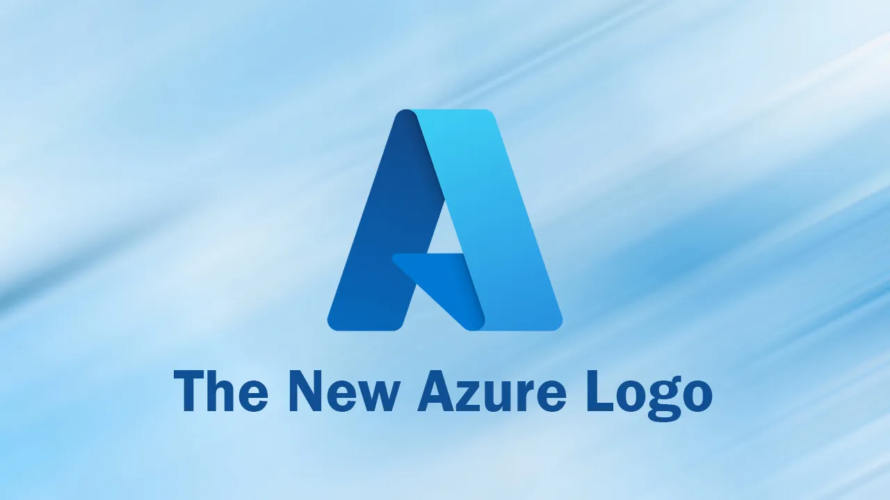
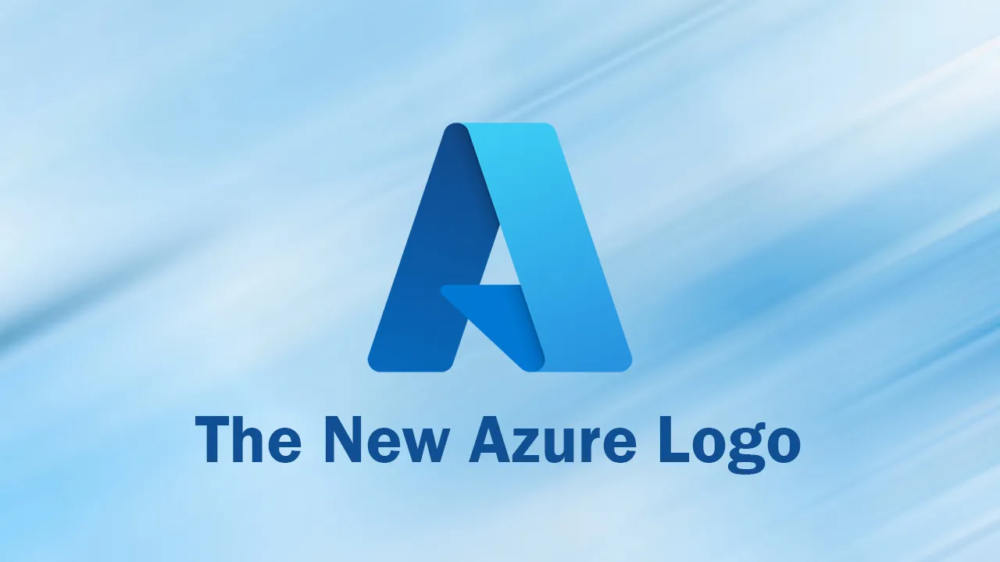

About Cloud Computing
Cloud computing is the delivery of computing services over the internet. It provides resources such as servers, storage, databases, networking, software, and analytics, all delivered as a service over the internet.
Cloud computing offers numerous benefits, including scalability, flexibility, cost savings, and reliability. It allows businesses to access and use computing resources without the need to invest in physical infrastructure or manage hardware.
Types of Cloud Computing
There are three main types of cloud computing:
- Infrastructure as a Service (IaaS): This type provides virtualized computing resources such as virtual machines, storage, and networking. Users have control over their applications and data at the infrastructure level.
- Platform as a Service (PaaS): PaaS offers a platform with development tools, libraries, and services to build, test, and deploy applications. It abstracts the management of infrastructure, allowing developers to focus on coding.
- Software as a Service (SaaS): SaaS delivers software applications over the internet on a subscription basis. Users can access and use the applications without worrying about installation, maintenance, or infrastructure.
Benefits of Cloud Computing
- Scalability: Cloud resources can easily scale up or down to meet demand, allowing businesses to pay only for what they use.
- Flexibility: Users can access cloud services from anywhere with an internet connection and on multiple devices.
- Cost Savings: Cloud computing eliminates the need for upfront investment in hardware and infrastructure, reducing costs.
- Reliability: Cloud providers offer high availability and reliability, ensuring data and applications are accessible and protected.
Cloud Services Images

 
